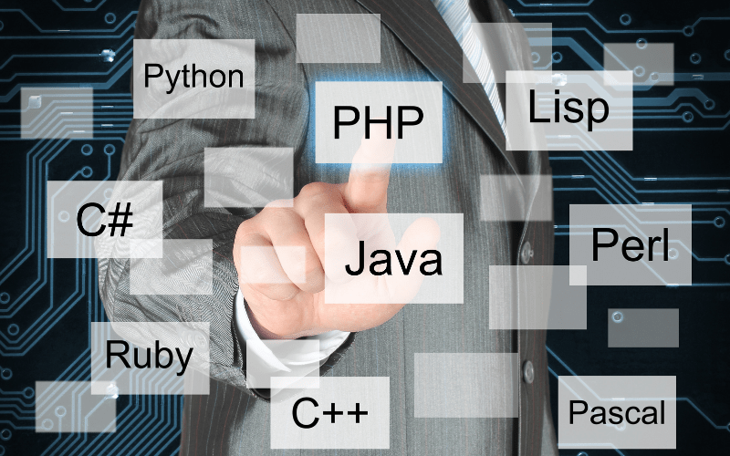

Lógica de programação
Hello World!
Quais os benefícios de aprender lógica de programação?
- Desenvolvimento do raciocínio lógico: A lógica de programação ajuda a desenvolver o raciocínio lógico, a criatividade e a capacidade de resolver problemas.
- Organização de ideias: Aprender programação ajuda a organizar melhor as ideias e pensamentos.
- Preparação para o mercado de trabalho: O mercado de trabalho tem procurado profissionais com habilidades de programação e um perfil mais analítico.
- Aprendizado de linguagens de programação específicas: A lógica de programação é uma base sólida para o aprendizado de linguagens de programação específicas.
- Comunicação entre programadores: A lógica de programação é importante para a comunicação entre programadores, permitindo que trabalhem de forma eficiente e eficaz.
- Depuração de programas: A lógica de programação é importante para a depuração de programas, pois permite identificar e corrigir erros.
- Aprendizado de ciências humanas e escrita: O ensino de programação e robótica pode melhorar o aprendizado de matérias de ciências humanas e a escrita.
Saiba mais
Ondem de estudos
- Introdução à Lógica de Programação
- Loops e Estruturas de Dados Simples
- Funções e Recursão
- Estrutura de Dados Avançadas
- Algoritmos de Ordenação e Busca
- Algoritmos de Divisão, Conquista e Programação Dinâmica
- Revisão do conteúdo e um Projeto usando vários conceitos aprendidos

| Java |
C++ |
Python |
| Verbosa |
Técnica |
Simples |